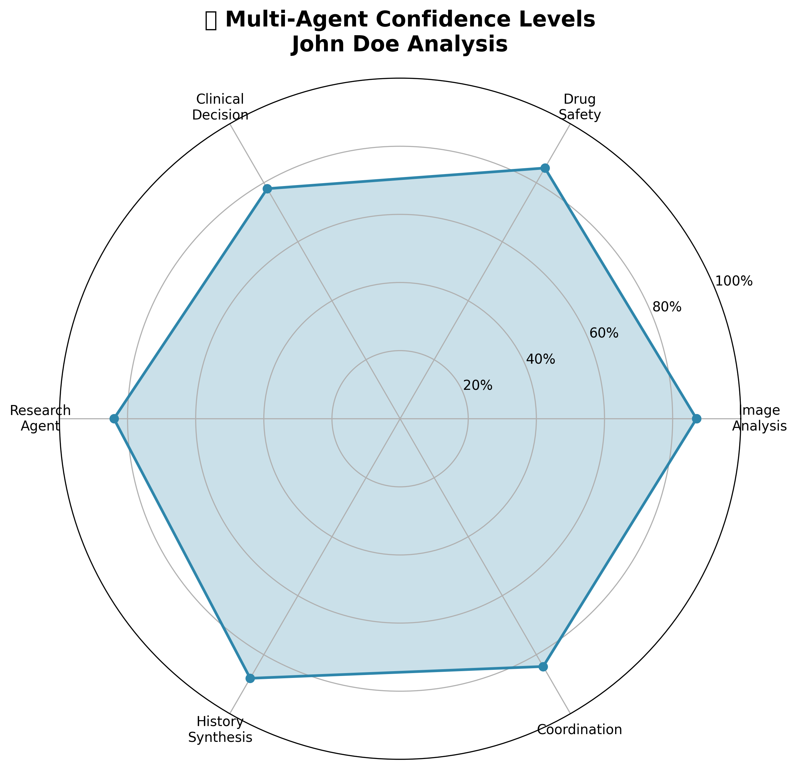
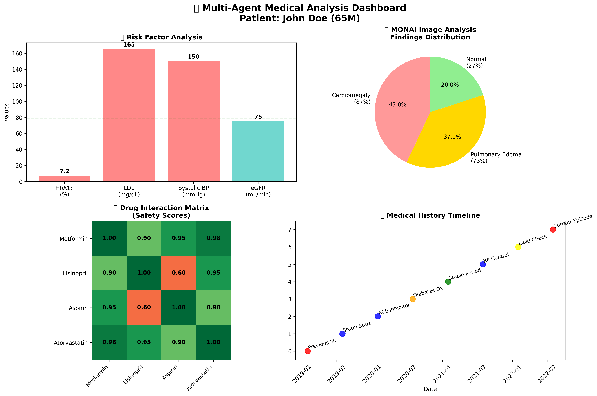
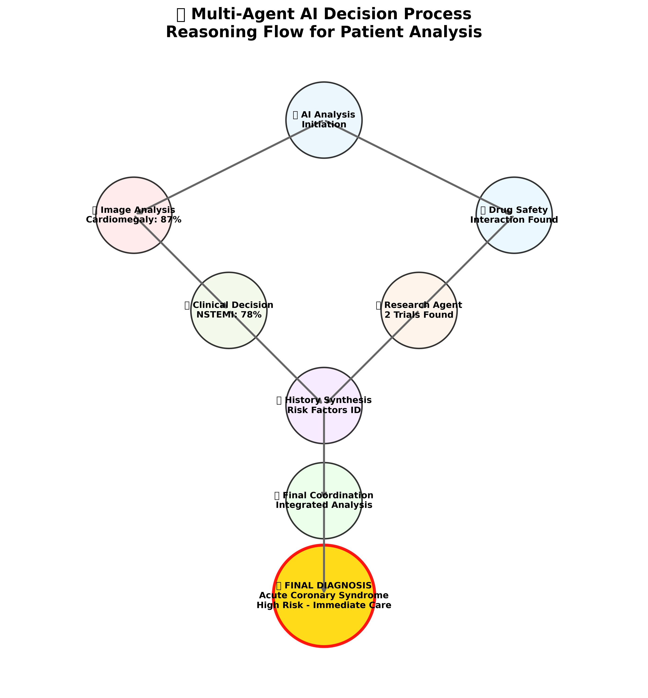
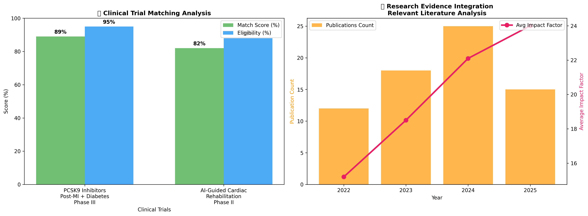

📊 Agent Confidence Analysis

Radar chart showing confidence levels for each AI agent:
• Image Analysis: 87% (MONAI-powered cardiac analysis)
• Drug Safety: 85% (Interaction detection)
• Clinical Decision: 78% (Evidence-based diagnosis)
• Research Agent: 84% (Trial matching)
• History Synthesis: 88% (Timeline analysis)
• Coordination: 84% (Multi-agent integration)
🏥 Medical Analysis Dashboard

Comprehensive medical analysis dashboard including:
• Risk factor analysis (HbA1c, LDL, BP, eGFR)
• Image analysis findings distribution
• Drug interaction safety matrix
• Medical history timeline from 2019-2025
🧠 AI Decision Process Flow

Visual representation of multi-agent reasoning flow:
• Shows how each agent contributes to final diagnosis
• Demonstrates coordination between specialized agents
• Illustrates evidence aggregation process
• Final integrated analysis leading to clinical recommendations
🔬 Research Integration Analysis

Clinical trial matching and research evidence:
• PCSK9 Inhibitors Trial: 89% match, 95% eligible
• AI-Guided Cardiac Rehab: 82% match, 88% eligible
• Research publication trends 2022-2025
• Average impact factor progression in relevant literature